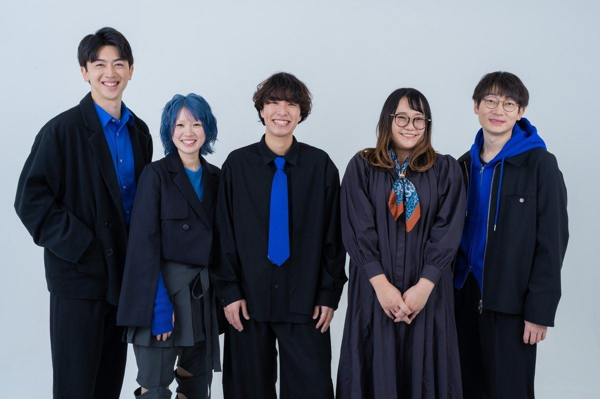
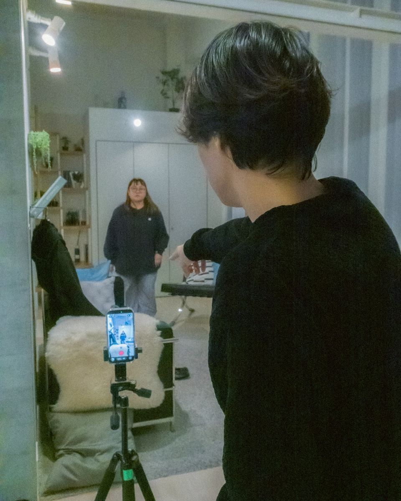
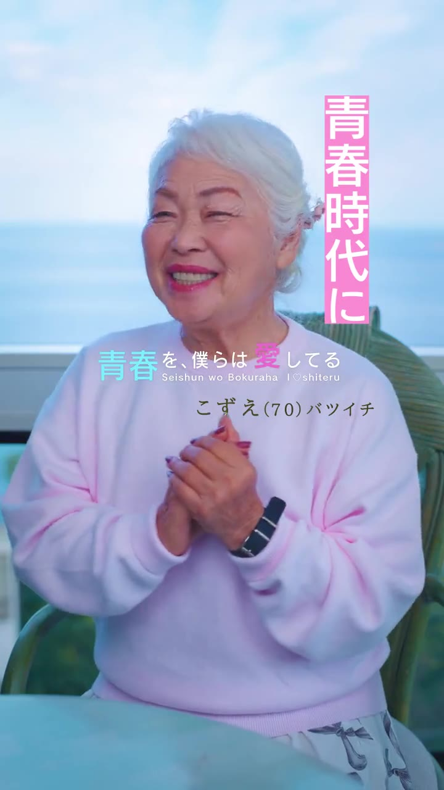
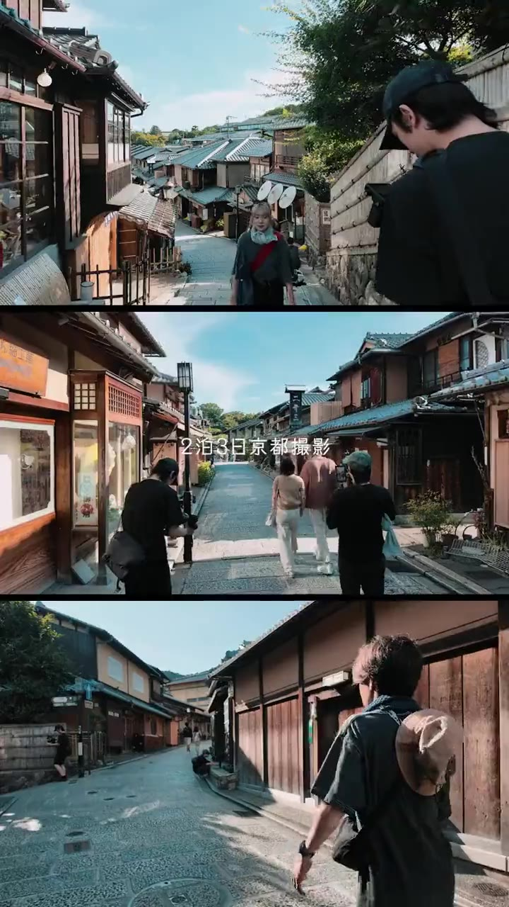
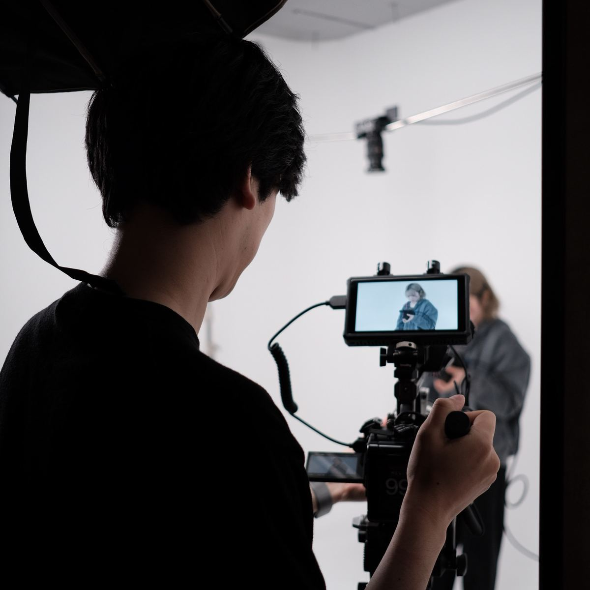
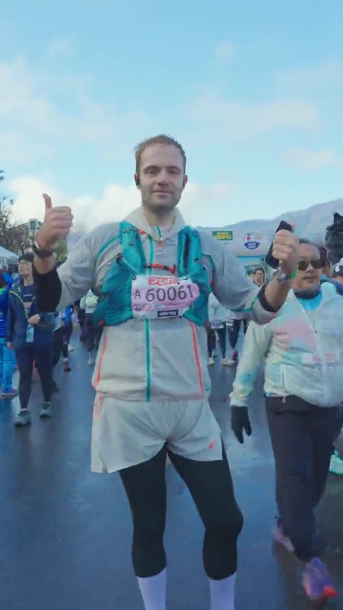
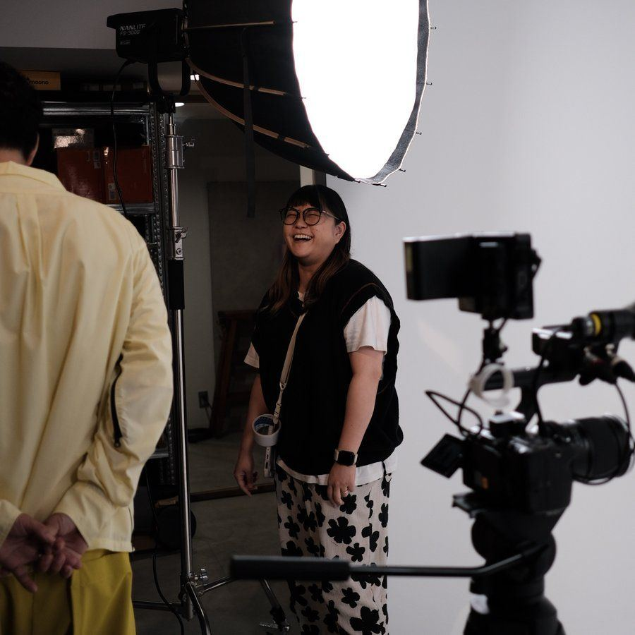
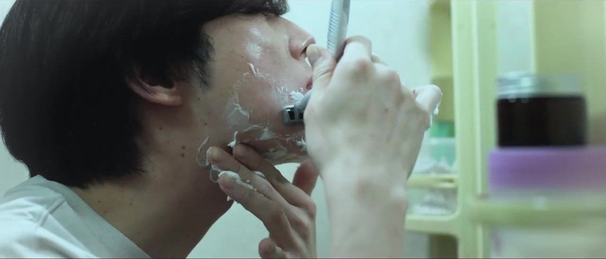

TikTok運用代行・ショート動画広告・WebCM制作のM2Log届けるまでが、
つくること。
SNSで届く企画と、映像をつくる力。その両方を持つチームが、御社の担当者として隣で走り続けます。一本で終わらない関係を、つくりたいと思っています。
第13回 BOVA 縦型動画部門 ファイナリスト作品
第13回 BOVA オンライン動画部門 協賛企業賞
準グランプリ
横にスワイプすると、ほかの作品も見られます。
- 第13回 BOVA オンライン動画部門 協賛企業賞
- 第13回 BOVA 縦型動画部門 ファイナリスト作品
- 「推して、秋田」映像コンテスト2026 準グランプリ
制作・運用実績（五十音順）：奥ジャパン株式会社／有限会社キコリ／株式会社CS日本／株式会社西武・プリンスホテルズワールドワイド／セガサミーホールディングス株式会社／株式会社セガ フェイブ／テレビ愛知株式会社／日本トイザらス株式会社／株式会社パン・パシフィック・インターナショナルホールディングス／株式会社PHONE APPLI／福島鰹株式会社／株式会社MIXI／株式会社リンクスホールディングス／株式会社WAKAMATSU ほか
映像は、
公開してからが本番。
いい映像をつくる。そこまでは、私たちにとって当たり前のことです。
本当の勝負は公開したあと。最後まで見られるか、届いてほしい人に届くか、見た人が動いてくれるか。そこまで考えて企画し、数字を見ながら次の一本に活かす。私たちは、それを「つくる」と呼んでいます。

映像をつくる前に、
チームに入る。
外から映像を納めるのではなく、御社のチームの一員として動きたい。だからM2Logには、できないことがあります。
納品して、
終われない。だから、担当者として会議に出て、公開したあとまで一緒に追いかけます。
企画を、
使い回せない。だから、御社の商品とお客さんを知るところから、毎回一から考えます。
言われたまま、
つくれない。だから、もっと届く方法があれば、遠慮なくご提案します。
外に、
丸投げできない。だから、企画・撮影・編集はすべて社内で。意図がずれず、直しも速い。
「チームが増えたみたい」と言ってもらえることが、一番うれしい。代表取締役 中村陵介メンバーを見る
目的に合わせて、
追う数字を変える。
同じショート動画でも、ゴールが違えば、つくり方も変わります。
- 来店
ショート広告動画の公開から2週間、毎週10人ほど「動画を見て来た」というお客さまが来店されているとのお声をいただきました。
美容院 - 販売
TikTok運用を始めて1か月。1本の動画をきっかけに、Amazonで3か月分を見込んでいた在庫が完売しました。
食品を扱う企業 - 採用
採用を目的にTikTok運用を半年続け、40名のエントリーにつながりました。
採用に取り組む企業
できること
縦も、横も。続ける運用も、1本の制作も。



TikTokアカウント運用代行
担当者としてチームに入り、企画・撮影から投稿、月次の改善まで回します。
詳しく見る


ショート動画広告・ショートドラマ制作
広告として成果を出すショート動画と、続きが気になるショートドラマ。テレビやCMの現場出身のメンバーがつくります。
詳しく見る
WebCM・ブランドムービー制作
WebCM、ブランドムービー、採用・広告。映像をどう使うかから設計します。
詳しく見る1本からでも、まるごとでも。入口が違っても、動くのは同じチームです。単発の制作から始めて、運用までお任せいただく形もあります。
頼み方を見る相談から、最初の一本が
世に出るまで。
ご契約から1か月〜1か月半ほどで、最初の動画を公開します。
- 0契約前・無料
無料相談
まず話して、課題を整理します。方向が見えてきたら、ご提案の際にコンセプトとKPIの考え方までお持ちします。
- 11〜2週目
キックオフ・インプット
資料をいただき、話を聞き、現場にも足を運びます。企画の精度は、ここで決まります。
- 22〜3週目
企画・撮影
設計に沿って企画を固め、撮影へ。企画から編集まで、同じチームが担当します。
- 34〜6週目
初稿・公開
撮影から約10日で初稿をお送りします。チェックを経て、最初の動画が世に出ます。
公開後は、月1回以上の定例に代表が直接参加します。月次レポートと改善提案を重ね、翌月の企画に反映していきます。
まず、小さく試すこともできます。いきなり大きく始めなくても大丈夫です。1本の制作や3か月のトライアルから始めて、手応えを見ながら広げていく形もご相談ください。
よくある質問
費用はどのくらいかかりますか？
本数、撮影の回数、広告費、体制によって大きく変わるため、一律の料金表は設けていません。ご予算を伺えれば、その範囲で何ができるかを率直にお伝えします。小さく試してから広げる始め方もできます。お見積りは無償です。
まだ具体的な案がなくても、相談できますか？
できます。ほとんどのご相談が、その状態から始まります。「何を達成したいか（採用・認知・売上など）」と「今ある素材・体制」を伺い、ご提案の際にコンセプトとKPIの考え方までお持ちします。ラフなメモ1枚でも大丈夫です。
1本だけの依頼でも大丈夫ですか？
大丈夫です。WebCMやショート動画など、1本からの制作もお受けしています。1本でも目的とターゲットの整理から入り、企画から納品まで同じチームが担当します。
社内に担当者や出演者がいなくても、お願いできますか？
ご連絡の窓口になる方がいれば、始められます。出演者がいなくても成立する企画を設計できますし、外部の演者を立てての制作もできます。逆に「社内の人が出るからこそ効く」企画もあるため、目的と社内の事情に合わせてご提案します。